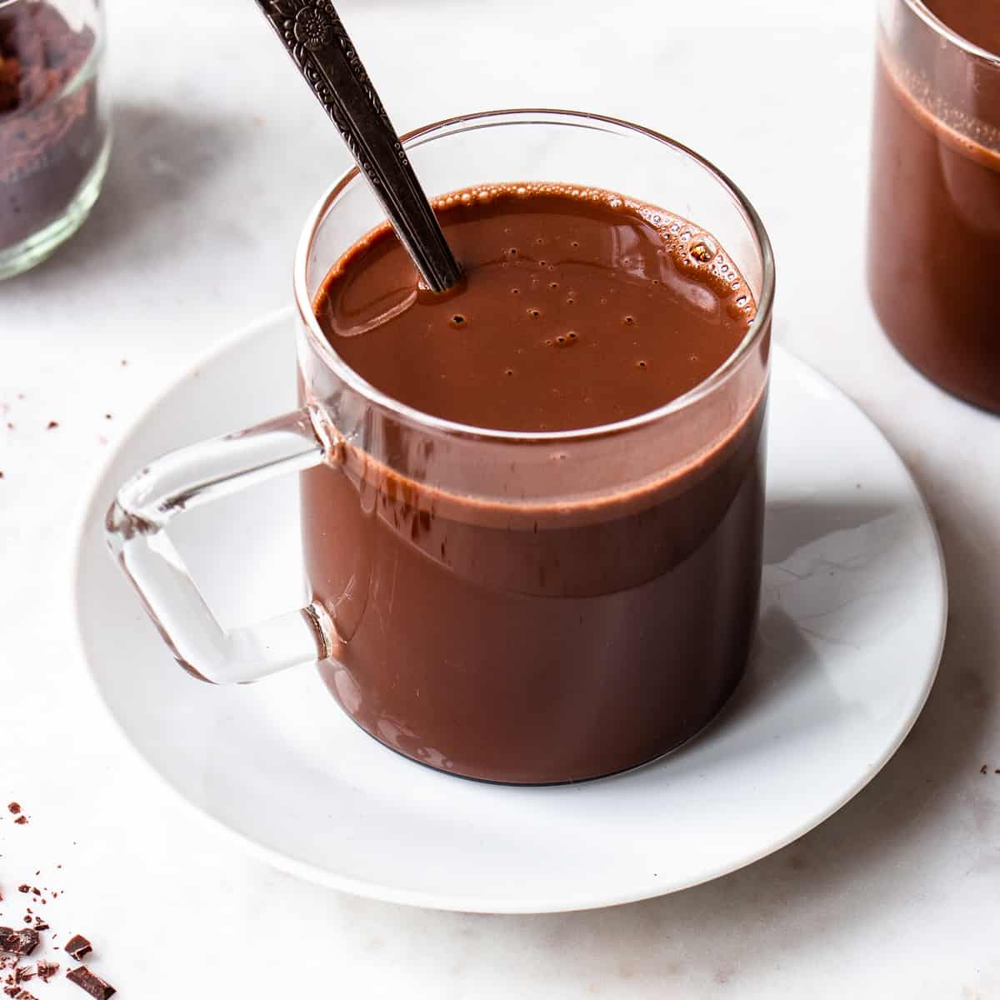

Easy Vegan Hot Chocolate

Velvety, rich hot chocolate made simple. Completely plant-based.
Ingredients
- Cocoa powder
- Dark chocolate chips
- Sugar of choice [I used caster]
- Plant-based milk [oat works well]
- Optional extras - cinnamon, flavour extracts, marshmallows, squirty cream
Instructions
- Using a high powered blender, combine the first 3 ingredients until the chocolate chips are at least halved in size
- Boil milk on the stove, using a small whisk to create air bubbles
- Add 3 heaped tablespoons of the chocolate mixture to a mug
- Pour over the milk and mix well
- At this point, you can add in additional flavouring such as orange extract or powdered cinnamon
- Either enjoy as is or top with marshmallows, cream or anything else you fancy